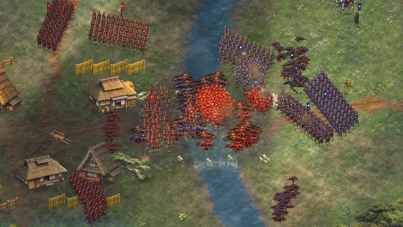
Armies of individuals
Each regiment is a block of men, and each man is simulated on his own. Soldiers hold their slot in formation, break off to duel, take hits against their armour, stagger, and fall where they stand.
Sengoku JapanMino Province, 1574
Hold the ford. Break their line. Protect your general.
A real-time tactical battle game with about 830 soldiers on the field, each one fighting for himself.
Desktop browser recommendedabout 100 MB downloadkeyboard and mouse
Free and open source made in Godot 4.7
The trailer
An AI-versus-AI battle at Kurogawa, filmed in-engine by a director camera at close zoom. Nothing here is pre-rendered: every soldier you see is simulated.
The battle
Inspired by the battle mode of the classic Sengoku strategy games, repainted as a living ink-and-lacquer diorama. You win by manoeuvre, not by spending more men.

Each regiment is a block of men, and each man is simulated on his own. Soldiers hold their slot in formation, break off to duel, take hits against their armour, stagger, and fall where they stand.
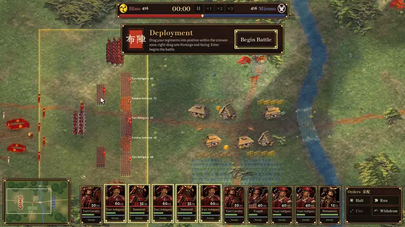
Right-click to march in formation. RMB-drag to draw the line itself: its frontage, depth and facing, previewed as a ghost before you let go.
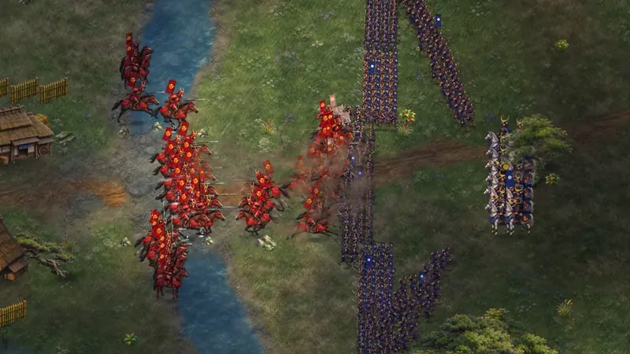
Horsemen at full gallop hit with a charge bonus and knock men off their feet. Yari ashigaru standing firm and facing the charge brace their spears and turn it into a slaughter of horses.
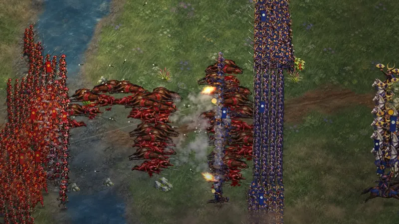
Archers loft volleys over friendly heads. Matchlock gunners fire point-blank, then vanish in banks of smoke that drift with the wind. Gunfire, flanks and casualties wear morale down until a regiment wavers, routs, and runs.
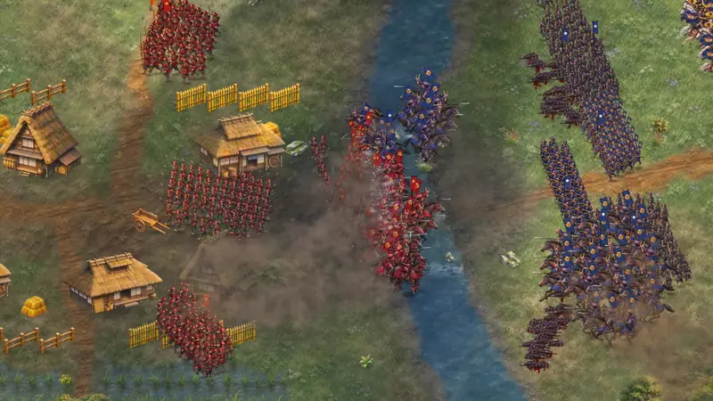
Lord Mizuno chooses to attack, defend or skirmish, forms a battle line, softens you up before the assault, sends cavalry around your flanks, cycle-charges and fights for the fords. Three difficulty levels.
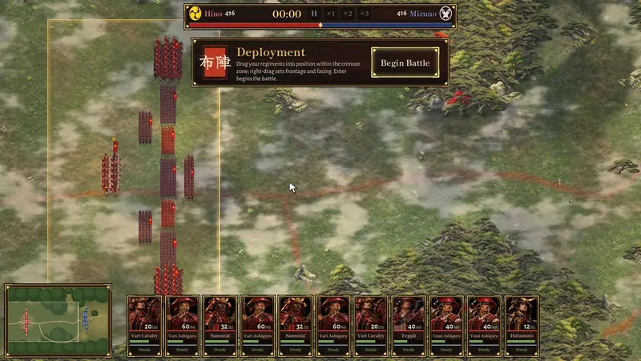
Before the conch sounds, place every regiment inside your gold zone and set its frontage. A good deployment wins half the battle.
A summer river plain with a main ford, a hidden northern ford and a shrine hill. A mountain pass at dawn where the enemy holds the ridge and the mist hides everything. Both are composed by hand, with real cover, high ground and flanking routes.
See the battlesThe battles
You are Hino Masatora, a young heir commanding his father's veterans for the first time. Lord Mizuno Tadakatsu has broken the old alliance and means to cut the Hino off from the capital road.
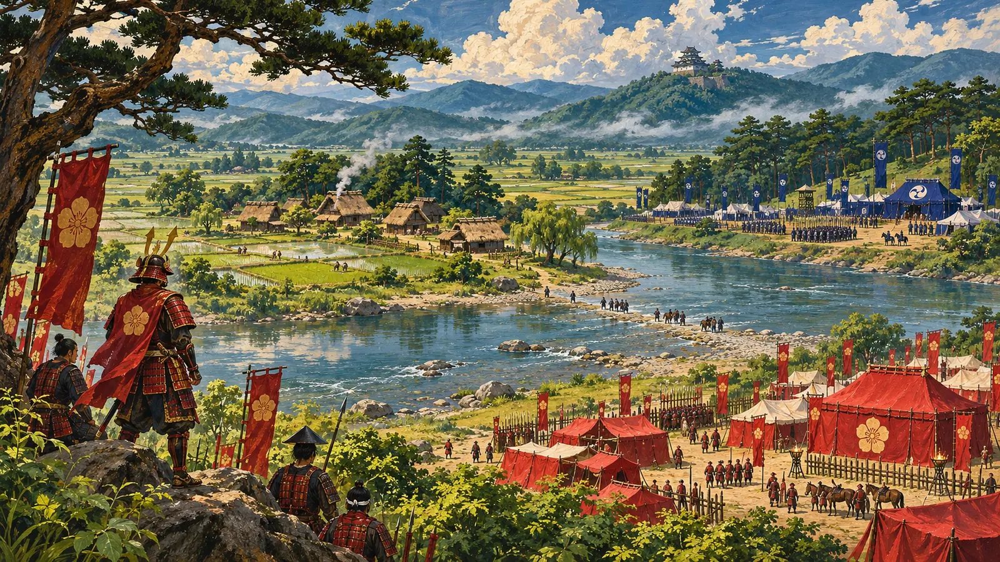
Battle I
Hold the only ford of the Black River. The Mizuno must cross the shallows under your bows, or not at all.
A river with a main ford and a hidden northern one, a village, rice paddies and the Hachiman shrine hill. A field battle of manoeuvre: watch the north.
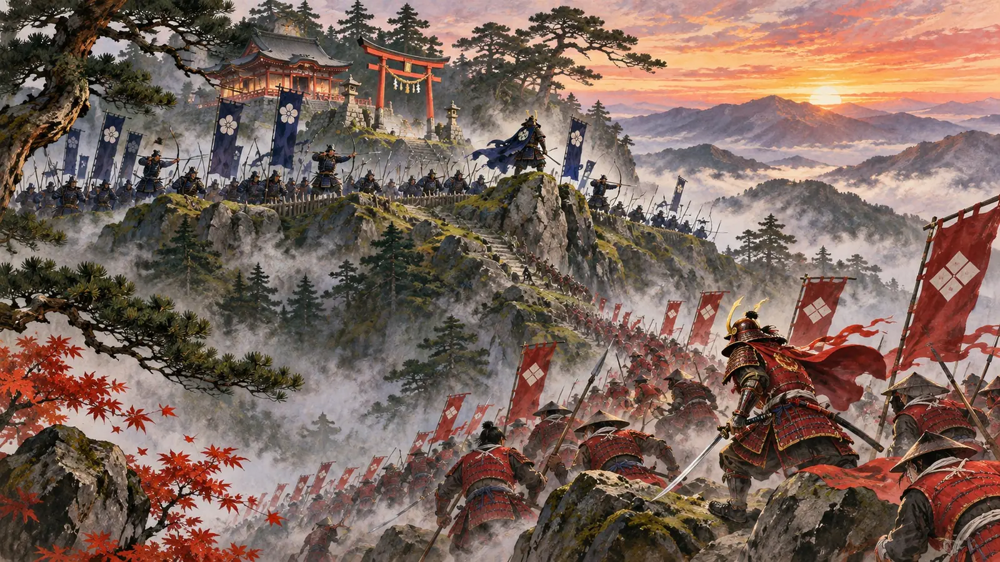
Battle II
The Mizuno hold the high ground above a fog-choked pass. Climb through pine and mist to dislodge them.
An uphill assault through a narrow throat, with a woodcutters' track that leads round the enemy's flank, if you can find it in the mist.
The army
Spear beats horse, horse beats bow and gun, missiles beat spear, and the samurai beat almost everyone. Read the field, then pick the fight.
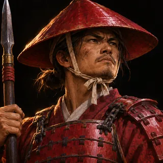
Cheap spearmen who hold the line. Braced and facing the enemy, they wreck a cavalry charge, but their morale is low.
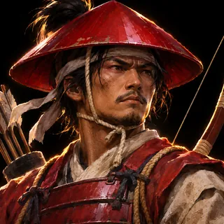
Long-range arcing volleys that fly over your own men. Deadly from behind a wall of spears, helpless in melee.
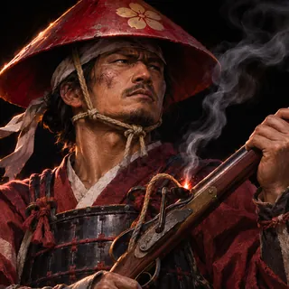
A devastating volley at short range that frightens whoever it hits. Then a slow reload inside their own smoke.
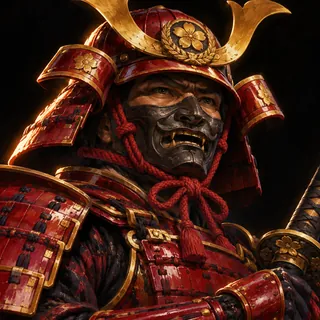
High attack, high defence, iron morale. They break lines, but have no answer to a cavalry charge.
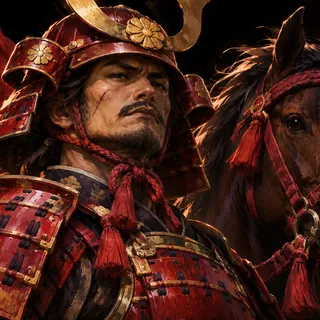
Fast, with a huge charge bonus. Hunt archers and flanks, pull out and charge again. Never ride into braced spears.
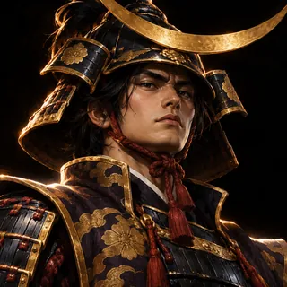
The general and his mounted guard. His presence steadies every regiment nearby. If he dies, the whole army feels it.
In the game
Unretouched captures from the running game.
How it was made
KASSEN was made by a team of AI agents, each with one job, working like a small game studio: a creative director setting the vision and reviewing every deliverable, and eight specialists building to it.
Wrote the game design document, the art bible and the tech plan, and gave an art-direction review of every deliverable.
Turned 57 generated images into one 4096² unit atlas: magenta keying, frame splitting, foot anchors and clan recolouring. 6 units × 2 clans × 4 animations × 8 frames.
The 30 Hz battle simulation, a y-sorted MultiMesh renderer for hundreds of soldiers, the controls, deployment and the test suites.
The enemy general: posture, battle line, soften-then-assault, cavalry flanking and cycle charges, ford tactics and difficulty levels.
The lacquer-and-washi theme: title, battle select, briefing, the HUD with unit cards, minimap and power bar, and the results scroll.
Gunsmoke banks, dust, blood and churned mud, spent arrows, drifting cloud shadows, low-lying mist and the colour grade.
Composed both battlefields by hand: rivers and fords, villages and shrines, hills, forests and the flanking routes.
104 sounds from CC0 sources and synthesis: taiko, horagai conch and shakuhachi music layers, and a pooled positional audio system.
An automated player that plays the whole game through real input events, plus the recording pipeline behind every video on this page.
Proof
A robot plays the game the way you would. It moves a visible cursor, clicks the menus, drags formation lines and presses hotkeys. Every action is a real mouse or keyboard event, so if a button is broken, the test fails. Each run is recorded frame by frame and checked against a list of things that must happen.
Real input. Clicks, drags and key presses go through the same input path as yours. No shortcuts into the code.
A visible cursor. A drawn cursor shows every injected click and drag, so you can follow along.
Checks along the way. Deployed inside the zone? Flankers reached the ridge? Victory, results, back to the title? Each one is a PASS or a FAIL.
Title, battle select, briefing, deployment, battle, victory, results and back to the title, all through mouse and keyboard. 2:49.
The same flow on the second map: an uphill attack through mist, with a flanking column sent along the woodcutters' track. 2:58.
Selection, formation drags, archer fire, a cavalry charge, every hotkey, and a victory. 2:28.
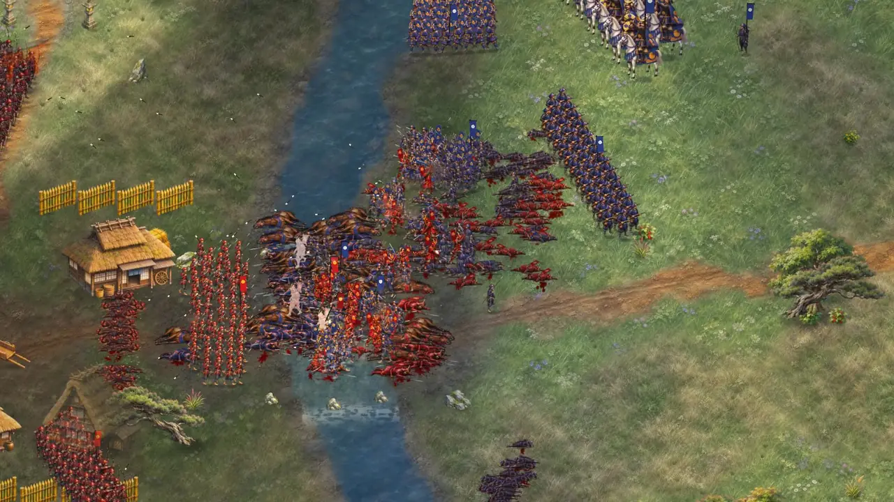
Watch aboveThe trailer is a test too: an AI-versus-AI battle that must reach a result, filmed by a director camera. 1:25.
The recordings are frame-perfect captures of the running game (Godot's movie writer at a fixed 30 fps). The full logs are in the repository. Beyond these runs, 87 simulation checks, 76 UI checks and a 23-check hotkey smoke test run headless.
No install, no account. Pick a battle and take the field.
Play in browserDesktop browser recommendedabout 100 MBkeyboard and mouse
Open source
Full details and attribution: ASSETS-LICENSE.md. Most art was made with image generation and assembled by the scripts in the repository.
KASSEN is an independent fan project. Not affiliated with or endorsed by Creative Assembly or SEGA; Total War and Shogun are trademarks of their respective owners.
git clone https://github.com/thekindofme/kassen.git
cd kassen
godot --path .Title, Battles, choose a battle and difficulty, read the briefing, deploy in the gold zone, then Begin Battle.